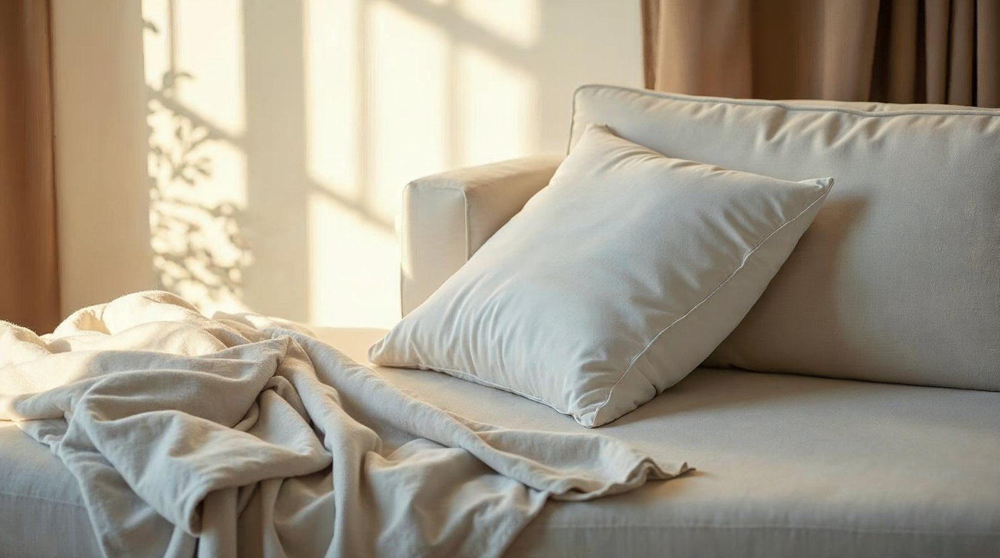
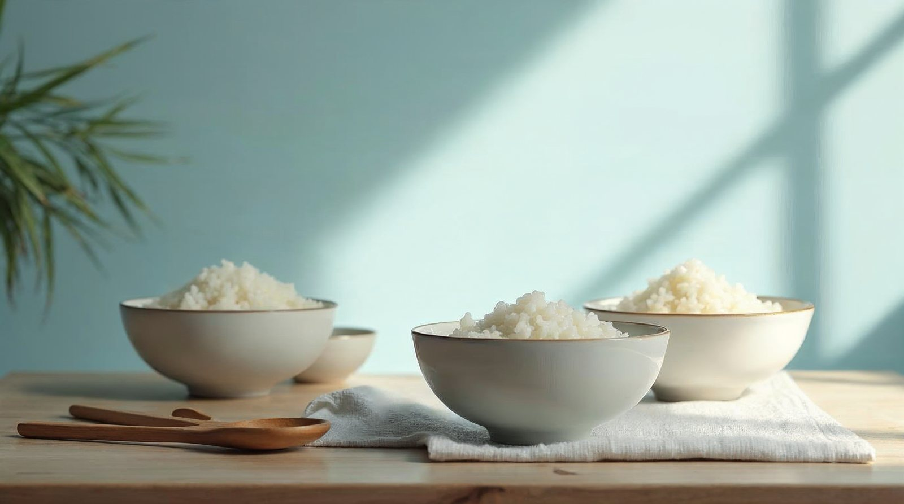
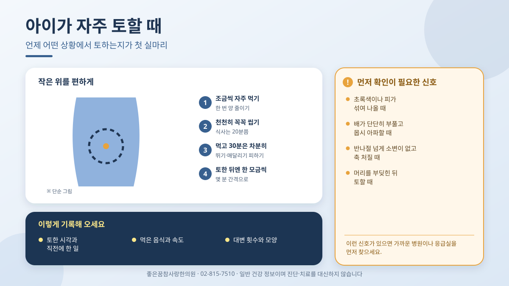

이종호 한의사 감수좋은꿈참사랑한의원 대표원장 (한의사 면허번호 19769)발행 2026-11-26 · 수정 2026-11-26
이 글의 차례
저녁 식탁에서 아이가 몇 숟가락 먹더니 갑자기 얼굴을 찡그립니다. 엄마가 그릇을 들고 달려가기도 전에 방금 먹은 밥이 쏟아집니다. 지난주에도, 그 전 주에도 비슷한 일이 있었습니다. 열은 없고 금세 다시 놀지만, 부모 마음에는 걱정이 쌓여 갑니다. '우리 아이는 왜 이렇게 자주 토할까.'
진료실에서 아이를 안고 오신 부모님들께 자주 듣는 이야기입니다. 소아청소년과에서는 크게 걱정할 일은 아니라는 말을 들었는데, 그래도 토하는 일이 잦으니 아이 속이 약한 건 아닌지 궁금하다고 하십니다. 밥을 먹일 때마다 또 토할까 봐 조마조마하다는 말씀도 함께 듣습니다.
아이는 어른보다 토하기 쉬운 몸을 가지고 있습니다. 위가 작고 입구를 조이는 힘이 아직 덜 자랐으며, 작은 자극에도 몸이 크게 반응하기 때문입니다. 그래서 대부분의 구토는 잠깐 지나가지만, 자주 반복된다면 어떤 상황에서 토하는지 차근차근 살펴볼 필요가 있습니다.
이 글에서는 아이가 왜 자주 토하는지, 게움과 토함은 어떻게 다른지, 토한 뒤 물과 음식은 어떤 순서로 주는지, 탈수 신호는 무엇인지, 그리고 소아청소년과와 한의원에서 함께 살피는 점을 차례로 말씀드리겠습니다.
게워 내는 것과 토하는 것은 어떻게 다른가요?
게워 내는 것은 먹은 것이 힘들이지 않고 입으로 흘러나오는 모습입니다. 아기가 수유 뒤 트림과 함께 젖을 조금씩 흘리는 것이 대표적입니다. 아이는 대개 불편해하지 않고 잘 놀며 몸무게도 잘 늘어납니다.
토하는 것은 배와 가슴에 힘이 들어가면서 먹은 것이 세차게 쏟아지는 모습입니다. 토하기 전에 얼굴이 창백해지거나 식은땀이 나고, 토하고 나서 기운이 빠지기도 합니다. 같은 '토했다'는 말도 이 두 가지가 꽤 다르기 때문에, 진료실에서는 어떤 모습이었는지 자세히 여쭙습니다.
아기 때의 게움은 대부분 돌 무렵까지 서서히 줄어듭니다. 걷기 시작하고 앉아 있는 시간이 늘면서 위의 입구가 더 단단해지기 때문입니다.
왜 아이는 어른보다 자주 토할까요
아이의 위는 어른보다 작고, 위의 입구를 조이는 근육도 아직 자라는 중입니다. 그래서 한 번에 많이 먹거나, 빨리 먹거나, 먹고 바로 뛰어놀면 쉽게 넘칩니다. 배가 부른 상태에서 울거나 기침을 해도 토하기 쉽습니다.
아이는 몸의 여러 신호가 한꺼번에 위로 몰리기도 합니다. 열이 나거나, 감기로 가래가 많거나, 차를 타서 어지럽거나, 긴장하고 불안할 때도 토하는 것으로 반응하는 경우가 많습니다. 어른이라면 속이 조금 메스꺼운 정도로 지나갈 일이 아이에게는 구토로 나타나는 셈입니다.
여기에 변비가 겹치면 배 속이 꽉 차서 조금만 먹어도 넘치기 쉽고, 식사 시간이 불규칙하거나 간식이 잦으면 위가 쉴 틈이 없어 더 예민해집니다.
어떤 상황에서 토하는지가 중요합니다
아이 구토는 언제, 어떤 상황에서 토하는지에 따라 살펴볼 방향이 달라집니다. 부모님이 보신 장면이 가장 중요한 실마리가 됩니다.
- 밥을 급하게 먹거나 많이 먹은 직후에 토하는 경우
- 기침을 심하게 하다가 끝에 토하는 경우
- 차나 버스를 탈 때마다 토하는 경우
- 아침에 일어나서 또는 등교 전에 토하는 경우
- 특정 음식을 먹은 뒤에 토하고 두드러기가 함께 나는 경우
- 열과 설사, 배앓이가 함께 있는 경우
예를 들어 기침 끝에 토한다면 호흡기를 먼저 살피고, 등교 전에만 토한다면 긴장과 불안을 함께 봅니다. 특정 음식 뒤에 토하고 피부가 붉어진다면 음식 알레르기를 소아청소년과에서 확인해 보시는 것이 좋습니다.
장염으로 토할 때
갑자기 여러 번 토하고 뒤이어 설사가 시작된다면 장염일 가능성이 큽니다. 어린이집이나 학교에서 비슷한 아이가 있었다면 더 그렇습니다. 장염 초기에는 물만 마셔도 토하는 경우가 많아 부모님이 많이 당황하십니다.
이때 가장 중요한 것은 물을 조금씩 자주 먹이는 것입니다. 한 번에 많이 먹이면 다시 토하기 쉬우니, 숟가락이나 작은 컵으로 몇 분 간격으로 한 모금씩 주세요. 약국에서 파는 경구 수액을 쓰시면 물과 함께 필요한 염분도 채울 수 있습니다.
토하는 횟수가 줄면 미음이나 죽, 바나나처럼 부드러운 음식부터 조금씩 시작합니다. 기름지고 단 음식, 우유와 주스는 장이 회복될 때까지 잠시 미루시는 편이 좋습니다.
탈수 신호를 알아 두세요
아이는 몸이 작아서 여러 번 토하면 금세 물이 부족해집니다. 아래와 같은 모습이 보이면 탈수가 시작된 것일 수 있어 소아청소년과 진료를 받으시길 권합니다.
- 소변 횟수가 눈에 띄게 줄고 색이 진한 경우
- 입술과 입안이 마르고 울어도 눈물이 적은 경우
- 평소보다 축 처지고 잠만 자려 하는 경우
- 눈이 쑥 들어가 보이는 경우
기저귀를 차는 아이라면 기저귀가 젖는 횟수를 세어 보시면 도움이 됩니다. 평소보다 확연히 줄었다면 물이 충분히 들어가지 않고 있다는 신호입니다.

마음이 배로 오는 아이들
검사에서 뚜렷한 이유가 없는데 자주 토하는 아이 가운데는 긴장과 불안이 배로 드러나는 경우가 있습니다. 새 학기, 이사, 동생이 태어난 시기, 시험이나 발표를 앞둔 날 아침에 유독 토하는 모습이 대표적입니다.
아이는 마음이 힘들다는 말을 잘 하지 못하는 대신 배가 아프다, 속이 울렁거린다고 표현합니다. 이럴 때 꾀병이라고 여기지 마시고, 아이가 느끼는 불편을 인정해 주시면서 무엇이 걱정되는지 천천히 물어봐 주세요.
드물게 며칠씩 심하게 토하다가 멀쩡해지는 일이 일정한 간격으로 반복되는 아이도 있습니다. 이런 모습이 보이면 소아청소년과에서 자세히 확인을 받아 보시는 것이 좋습니다.
아기의 게움은 어떻게 살피나요?
아기가 수유 뒤 젖을 자주 게워 내도 잘 먹고, 잘 자고, 몸무게가 잘 늘고 있다면 대부분은 자라면서 줄어듭니다. 수유 중간과 끝에 트림을 시키고, 수유 뒤 20~30분은 세워 안아 주시면 게우는 양이 줄어드는 경우가 많습니다.
한 번에 먹는 양이 많으면 넘치기 쉬우니 양을 조금 줄이고 횟수를 늘려 보세요. 다만 수유 때마다 몹시 보채고 등을 활처럼 젖히거나, 몸무게가 잘 늘지 않는다면 소아청소년과에서 확인을 받아 보시는 것이 좋습니다.
콧물과 가래가 많을 때
감기에 걸려 콧물이 목 뒤로 넘어가고 가래가 많아지면, 아이는 그것을 삼키다가 속이 울렁거려 토하기 쉽습니다. 토한 것에 끈적한 가래가 섞여 나오는 경우가 많고, 특히 아침에 일어난 직후나 기침을 한참 한 뒤에 잘 생깁니다.
이럴 때는 방의 습도를 적당히 맞추고, 물을 자주 마시게 해서 가래를 묽게 해 주세요. 잠들 때 머리 쪽을 조금 높여 주는 것도 도움이 됩니다. 콧물과 기침이 오래가면 소아청소년과나 이비인후과에서 함께 살펴보세요.
토한 뒤 정리할 때 기억할 것
장염으로 토한 경우에는 토사물로 가족에게 옮을 수 있습니다. 치울 때는 장갑을 끼고, 일회용 수건으로 닦은 뒤 바닥과 손잡이를 소독해 주세요. 아이와 가족 모두 비누로 손을 꼼꼼히 씻는 것이 중요합니다.
토한 아이의 옷과 이불은 따로 세탁하시고, 아이 입 주변도 미지근한 물로 닦아 주세요. 토하고 나면 입안에 신 냄새가 남아 다시 울렁거리기 쉬우니 물로 가볍게 헹구게 해 주시면 좋습니다.
어린이집과 학교에 다닌다면
장염으로 토한 뒤에는 증상이 멎고 하루 이틀 정도 지켜본 뒤 등원하는 것이 다른 아이들과 아이 자신 모두에게 좋습니다. 기관마다 기준이 있으니 미리 확인해 두세요.
자주 토하는 아이라면 선생님께 미리 알려 두시는 것도 도움이 됩니다. 급식을 천천히 먹도록 살펴 주시거나, 식사 뒤 바로 뛰어놀지 않도록 거들어 주시면 아이도 한결 편안하게 지낼 수 있습니다.

간식과 음료가 위를 쉬지 못하게 할 때
식사와 식사 사이에 과자, 젤리, 주스를 자주 먹으면 위가 쉴 틈이 없습니다. 그러면 정작 식사 때는 입맛이 없고, 억지로 먹다 보면 토하기 쉬워집니다. 단 음료와 탄산음료는 배에 가스를 차게 해 넘치는 느낌을 키우기도 합니다.
간식은 하루 한두 번 정해진 시각에 주시고, 목이 마를 때는 물이나 보리차를 주세요. 식사 시간이 일정해지면 배고픔과 배부름의 리듬이 생겨 아이 스스로 먹는 양을 맞추기도 쉬워집니다.
먼저 이렇게 여쭙니다
처음 오시면 부모님께 대략 이런 순서로 여쭙니다. 미리 떠올려 오시면 이야기가 수월해집니다.
- 언제부터, 일주일에 몇 번 정도 토하나요?
- 주로 어떤 상황에서 토하나요? 식사 직후, 기침 끝, 차 안, 아침 등
- 토한 내용물의 색과 양은 어떤가요?
- 열, 설사, 변비, 배앓이가 함께 있나요?
- 키와 몸무게는 잘 늘고 있나요?
- 소아청소년과에서 진료를 받았거나 드시는 약이 있나요?
토하는 장면을 휴대폰으로 찍어 두신 사진이 있다면 보여 주셔도 도움이 됩니다. 키와 몸무게가 적힌 성장 기록 수첩도 함께 챙겨 오세요. 정확히 기억나지 않는 부분은 함께 이야기하며 정리해 갑니다.
일상에서 먼저 해 볼 수 있는 것
- 한 번에 먹는 양을 줄이고 먹는 횟수를 조금 늘려 보기
- 식사 시간은 20분 정도로 천천히, 꼭꼭 씹어 먹기
- 먹고 나서 30분은 뛰거나 거꾸로 매달리는 놀이 피하기
- 잠들기 두 시간 전에는 식사와 간식 마치기
- 단 음료와 과자 같은 간식 줄이기
- 대변을 매일 보는지 살피고 물과 채소 챙기기
먹일 때마다 또 토할까 봐 긴장하면 아이도 그 긴장을 느낍니다. 식탁 분위기를 편안하게 하고, 다 먹으라고 다그치기보다 아이가 배부르다고 할 때 멈춰 주시는 것이 오히려 도움이 됩니다.
한의원에서 함께 살필 수 있는 경우
- 소아청소년과에서 큰 이상은 없다는데 자주 토하는 경우
- 조금만 먹어도 배가 빵빵해지고 입맛이 없는 경우
- 배가 차고 손발이 차며 대변이 묽거나 변비가 반복되는 경우
- 긴장하는 날마다 배가 아프고 토하는 경우
- 장염을 앓고 난 뒤 입맛과 기운이 돌아오지 않는 경우
좋은꿈참사랑한의원에서는 맥을 짚고 배를 만져 보며 아이의 소화 흐름과 몸의 온도를 살핍니다. 진찰한 내용을 바탕으로 아이에게 맞는 부드러운 침이나 온열 관리, 한약 상담 가운데 지금 상태에 맞는 것을 부모님과 함께 정합니다.
한약을 상의할 때는 아이의 나이와 몸무게, 드시는 약을 모두 확인하고 신중하게 정합니다. 소아청소년과 진료는 계속 이어 가시고, 처방받은 약은 상의 없이 멈추지 않으시도록 안내합니다.
이렇게 기록해 오시면 상담이 쉬워집니다
2주 정도 간단히 적어 오시면 아이가 어떤 때 토하는지 흐름이 보입니다.
- 토한 날짜와 시각, 그 직전에 한 일
- 먹은 음식과 양, 먹은 속도
- 토한 내용물의 색과 양
- 대변 횟수와 모양
- 그날 아이의 기분이나 있었던 일
기록을 나란히 놓고 보면 '밥을 급하게 먹은 날', '기침이 심했던 밤', '학원 가기 전'처럼 반복되는 장면이 보이기 시작합니다. 그 장면이 다음에 바꿔 볼 것을 알려 줍니다. 기록은 한 줄씩이면 충분하니 부담 갖지 마세요.
아이의 속이 자라는 시간
아이의 위와 장은 몸과 함께 자랍니다. 지금 자주 토한다고 해서 앞으로도 계속 그럴 것이라는 뜻은 아닙니다. 부모님이 지금처럼 아이의 모습을 꼼꼼히 지켜봐 주시는 것이 가장 큰 힘이 됩니다. 먹는 양과 속도, 생활의 리듬을 조금씩 맞춰 주면 대부분의 아이는 점점 덜 토하게 됩니다.
이번 주에는 한 번에 먹는 양을 조금 줄이고, 먹고 나서 30분은 차분히 노는 것부터 시작해 보세요. 다음에 오시면 기록을 함께 펼쳐 보며 그다음 걸음을 같이 정하겠습니다.
이런 증상은 먼저 확인이 필요합니다
- 초록색이나 피가 섞인 것을 토하거나 배가 단단하게 부풀고 몹시 아파하는 경우
- 반나절 넘게 소변이 없고 축 처져 깨우기 어렵거나 머리를 부딪힌 뒤 토하는 경우
이런 신호가 있으면 한의원보다 가까운 병원이나 응급실을 먼저 찾으세요.
함께 읽으면 좋은 글
- 아이가 차나 버스만 타면 속이 메스껍고 토하는 멀미는 왜 생기고 어떻게 살피나요?
- 장염이나 수족구를 앓고 난 뒤 아이가 입맛과 기운을 되찾지 못할 때는 어떻게 살피나요?
- 아이가 배가 아프다고 할 때 위치와 시간은 어떻게 적어 두면 좋을까요?
- 아이가 며칠씩 변을 못 보거나 화장실 가기를 무서워하는 소아 변비는 어떻게 살피나요?
- 아이가 밥을 몇 숟가락 먹고 안 먹으려 할 때는 무엇을 먼저 살피나요?

여쭙는 것
- 언제부터, 일주일에 몇 번 정도 토하나요?
- 주로 어떤 상황에서 토하나요? 식사 직후, 기침 끝, 차 안, 아침 등
- 토한 내용물의 색과 양은 어떤가요?
생활에서 해 볼 것
- 한 번에 먹는 양을 줄이고 먹는 횟수를 조금 늘려 보기
- 식사 시간은 20분 정도로 천천히, 꼭꼭 씹어 먹기
- 먹고 나서 30분은 뛰거나 거꾸로 매달리는 놀이 피하기
한의원에서 함께 살필 것
- 소아청소년과에서 큰 이상은 없다는데 자주 토하는 경우
- 조금만 먹어도 배가 빵빵해지고 입맛이 없는 경우
- 배가 차고 손발이 차며 대변이 묽거나 변비가 반복되는 경우
먼저 확인이 필요한 신호
- 초록색이나 피가 섞인 것을 토하거나 배가 단단하게 부풀고 몹시 아파하는 경우
- 반나절 넘게 소변이 없고 축 처져 깨우기 어렵거나 머리를 부딪힌 뒤 토하는 경우
한눈에 보는 표
| 구분 | 핵심 |
|---|---|
| 여쭙는 것 | 언제부터, 일주일에 몇 번 정도 토하나요? 주로 어떤 상황에서 토하나요? 식사 직후, 기침 끝, 차 안, 아침 등 |
| 생활에서 해 볼 것 | 한 번에 먹는 양을 줄이고 먹는 횟수를 조금 늘려 보기 식사 시간은 20분 정도로 천천히, 꼭꼭 씹어 먹기 |
| 한의원에서 함께 살필 것 | 소아청소년과에서 큰 이상은 없다는데 자주 토하는 경우 조금만 먹어도 배가 빵빵해지고 입맛이 없는 경우 |
| 먼저 확인이 필요한 신호 | 초록색이나 피가 섞인 것을 토하거나 배가 단단하게 부풀고 몹시 아파하는 경우 반나절 넘게 소변이 없고 축 처져 깨우기 어렵거나 머리를 부딪힌 뒤 토하는 경우 |
자주 묻는 질문
아이가 토한 뒤 바로 물을 줘도 되나요?
토한 직후에는 위가 예민하니 10~20분쯤 쉬게 한 뒤, 숟가락이나 작은 컵으로 한 모금씩 몇 분 간격으로 주세요. 한 번에 많이 마시면 다시 토하기 쉽습니다.
토한 뒤에 바로 밥을 먹여도 되나요?
물을 잘 받아들이고 토하는 횟수가 줄면 미음이나 죽처럼 부드러운 음식부터 조금씩 시작하세요. 기름지고 단 음식, 우유는 잠시 미루시는 편이 좋습니다.
기침하다가 토하는 것도 걱정해야 하나요?
기침이 심하면 아이는 끝에 토하기 쉽습니다. 기침의 원인을 소아청소년과에서 먼저 살펴보시고, 밤에 기침이 심하다면 방의 습도와 잠자는 자세도 함께 살펴 주세요.
아이도 한약을 먹을 수 있나요?
아이의 나이와 몸무게, 드시는 약을 모두 확인하고 신중하게 정합니다. 맛과 양도 아이가 먹을 수 있는 정도로 함께 맞추고, 소아청소년과 진료는 계속 이어 가시도록 안내합니다.
아침마다 등교 전에 토하는데 어떻게 하나요?
긴장이나 불안이 배로 드러나는 경우가 있습니다. 아침 식사를 가볍게 하고 시간 여유를 두며, 아이가 무엇을 걱정하는지 천천히 들어 주세요. 반복되면 소아청소년과에서 확인을 받아 보세요.
좋은꿈참사랑한의원은 재진 때 지난번 이야기부터 이어서 여쭙니다. 진료시간과 예약은 오시는 길에서 확인하세요.
어디서 상담받을 수 있나요?
좋은꿈참사랑한의원은 서울 동작구 만양로2길 2 신성빌딩 3층·5층(서울 동작구 상도동, 7호선 상도역 3번 출구 근처)에 있습니다. 한의사 3명(이종호 대표원장, 조영기 수석진료원장, 정원영 진료원장)이 진료합니다. 진료시간은 평일 09:30~20:00(점심 13:00~14:00), 토·일·공휴일 09:30~15:00이며, 방문 전 전화로 확인을 권합니다. 예약은 네이버 예약, 카카오톡 상담, 전화 02-815-7510로 받습니다.
이 글은 일반적인 건강 정보이며 개인의 진단이나 치료를 대신하지 않습니다. 증상이 있거나 복용 중인 약이 있다면 진료를 통해 확인하세요. 치료 효과는 개인마다 다를 수 있습니다.
작성 기준: 일반적으로 알려져 있는 건강 정보를 참고해 정리했습니다(대표원장 감수). 증상 기록은 1~2주 동안 하루 1회, 비슷한 시간에 적어 오시면 지난 상태와 비교하기 쉽습니다.